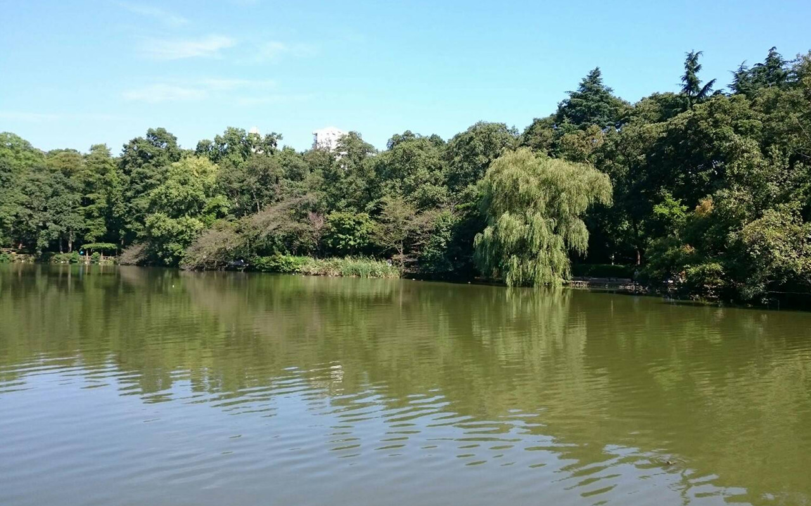
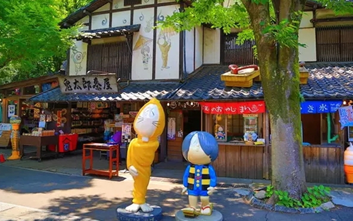
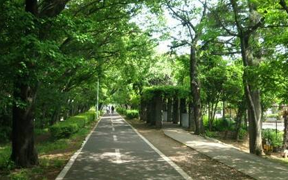
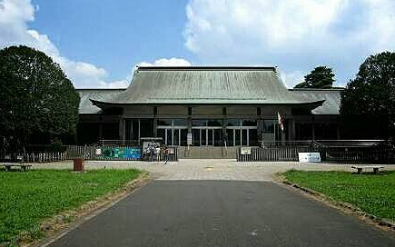
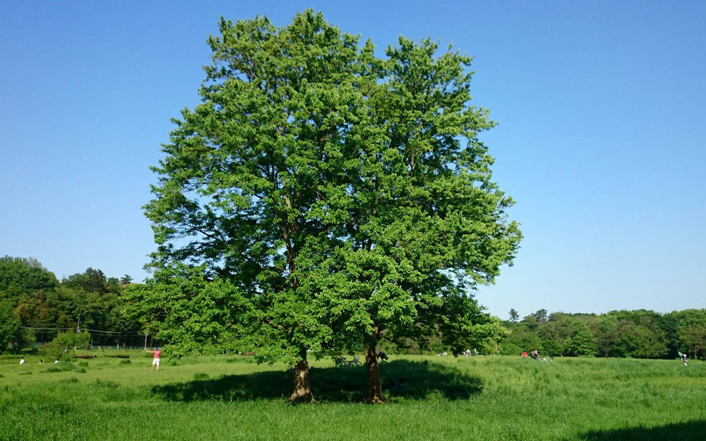
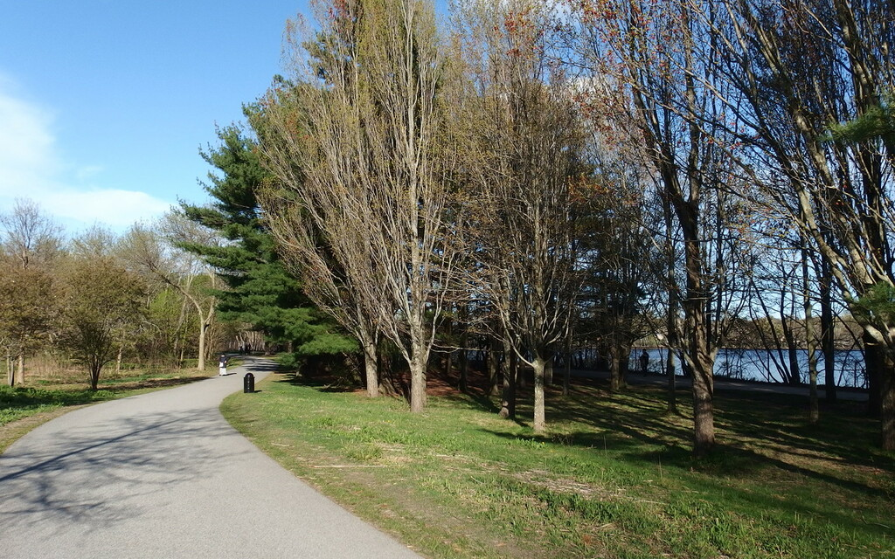
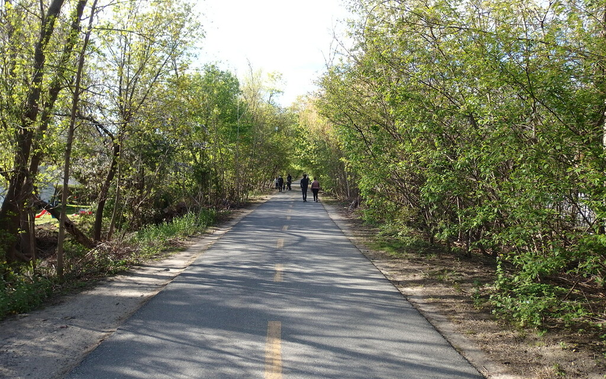
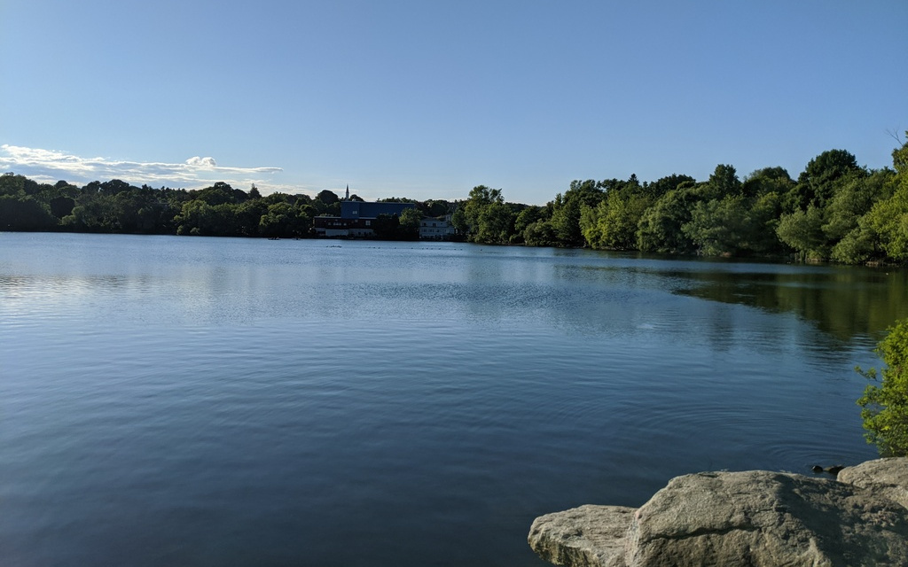
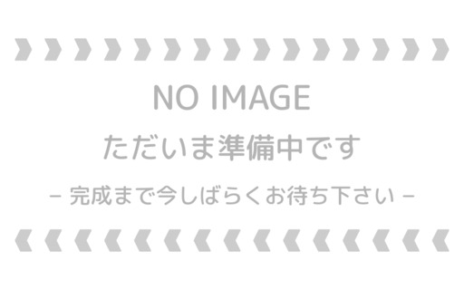

Tetsuya Ishikawa
Everything in the World is Made of Mathematics
Running
おすすめのランニングコースをご紹介するページです
Tokyo Area
井の頭公園
井の頭公園のステージ前からスタートし，ジブリの森美術館，三鷹台駅を経由して井の頭公園まで戻るコースです．一周約 5.4 km です．ほぼ公園内で完結するので，大人数で走っても問題なく，自転車や自動車に気を使う必要もあまりないため，非常に走りやすいコースです．距離が足りない場合は池の周辺を何周か追加しても良いでしょう．日曜日の朝にこのコースを走り，ラン後に近くのドトールコーヒー吉祥寺公園口店でモーニングを頂くのが私の日課でした．マップはこちら
吉祥寺駅 深大寺
吉祥寺駅から深大寺までの片道約 6.5 km のコースです．本来は東八道路を右折した後は三鷹通りを真っ直ぐに行くのが分かりやすのですが，走りやすさのためにやや大回りなコースになっています．初めての方にはやや迷いやすいかもしれません．深大寺の近くには有名なお蕎麦屋さんが何店舗もあり，リーズナブルな価格で美味しいお蕎麦を頂けます．深大寺を訪れた際にはぜひお試し下さい．写真は境内の近くにある鬼太郎茶屋です．マップはこちら
多摩湖自転車道
東伏見から多摩湖まで真っ直ぐつながるサイクリングロードです．片道 9.2 km です．木々が多いので新緑の季節におすすめです．小平駅から多摩湖までの区間は人通りも多くなく，ゆったりとランニングを楽しめるので大人数でのランニングにも向いています．このコースの特に素晴らしいのは，お風呂の王様花小金井店 があること．お店の外にはコインロッカーがあり，お風呂を利用しないランナーでも自由に利用できます．なので出発前にコインロッカーに荷物を預け，ラン後に荷物を引き出してお風呂に Go! という流れがおすすめです．マップはこちら
小金井公園
東小金井駅，あるいは武蔵小金井駅から北方向に行ったところにある，都内最大級の公園です．公園の中でほぼ完結するコースであること，また一周が長いことから，長めの距離を走りたい際におすすめです．ただし，公園内は道が曲りくねっているので，初回は方向が分からなくなること必至です．慣れるまでは迷うことを前提に，時間や距離を少し大目に見積っておいた方が良いと思います．桜の季節は一度行っておいて損はないでしょう．マップはこちら
武蔵野公園
東小金井駅から南方向に少し下ったところにある，武蔵野公園の中や野川沿いを走るコースです．緑の多いコースであり，かつ自転車や自動車にもほぼ気を使う必要がないので，非常に走りやすいコースです．都会の喧騒を忘れたいときには特におすすです．ただし，砂利道が多いのでスピードを出したい方には向きません．また川沿いは街灯のないエリアが多いので，夜間のランニングは避けた方が無難でしょう．マップはこちら
Boston Area
Fresh Pond
ボストン（正確にはケンブリッジ市）にある Fresh Pond という池をひとまわりする，1 周約 3.6 km のコースです．地下鉄レッドラインの終点 Alewife 駅からすぐ近くなので，車でなくてもアクセスが容易なこと，池の周辺には幅の広い道があるため走りやすいことから，地元のひともよく走りにくるスポットです．私の自宅が Alewife 駅の近くなので，個人的にも走る機会が最も多いコースです．マップはこちら
Minuteman Commuter Bikeway
Alewife 駅の近くから Spy Pond の近くまで真っ直ぐに続くサイクリングロードです．片道約1.9kmです．まっすぐな道が多いので走りやすく，緑が多いので癒されます．地元のひともよく散歩しています．往復でも 3.8 km と距離が短いコースですので，時間のないときにササっと走るのが Good です．ただし，サイクリングコースゆえに自転車も多く走っています．周囲には十分お気を付け下さい．マップはこちら
Spy Pond
Alewife 駅の近くにある Spy Pond をひとまわりする，1 周約 5.2 km のコースです．Minuteman Commuter Bikeway を直進し，湖を反時計回りに周回するコースです．Fresh Pond と同じくらい走りやすく，周回方向の規制などもされていませんので，昼間や夕方にはお勧めですが，人通りが少ない道もあるので夜間は避けた方が良いでしょう（そもそもアメリカでの夜間のひとり歩き自体がお勧めできません）．マップはこちら
Little Pond
Little Pond の周辺をひとまわりする，1 周約 4.2 km のコースです．湖を周回するルートではありますが，Fresh Pond や Spy Pond のコースとは違い，ほぼ街中を走るルートですので，あまり湖の周辺という感じはしません．自然の中を走りたいという方はあまり満足できないかもしれませんが，逆に「THE・アメリカの家」をたくさん見ることができるため，アメリカの雰囲気を楽しむには良いコースです．マップはこちら
Route Map
地点 A がスタート，地点 B がゴールです．右上の拡大ボタンを押すと別ウィンドウでマップを開くことができます．